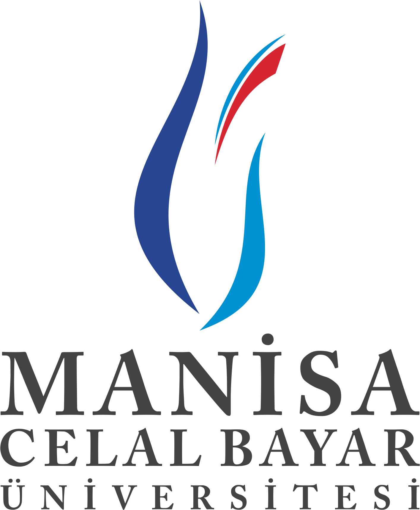

01 / AÇIK KAYNAK
RecoverTick & OpenRobotKit geliştiriyorum
MÜHENDİSLİK PORTFOLYOSU
Mehmet Akif
Çakır.
Koddan harekete. Fikirden üretime.
Gömülü sistemleri, robotiği ve açık kaynak yazılımı bir araya getiriyorum. Rust’taki ilk satırdan çalışan bir prototipe — üreterek öğreniyorum.
Turgutlu, Manisa · Türkiye/ GitHub
+ ETKİLEŞİMLİ ŞEMA ETKİLEŞİMLİ
Fikirler hareket hâlinde.Temsili mekanizma · sürükleyerek döndür
BİRAZ KOD, BİRAZ ÜRETİM
Tek bir merak. Birçok yön.
Az kod.
02 / GÖMÜLÜ SİSTEMLER & ROBOTİK
Hareket için tasarlandı.
STM32, Arduino ve elektrik-elektronik temeli. Algılamadan harekete, otonom robotlar.
03 / DİJİTALDEN FİZİKSELE
Yeni bir boyut.
CAD’den 3B baskıya; biyomedikal modeller ve doğadan ilham alan mekanizmalar.
04 / SINIRLARIN ÖTESİNDE
Daha geniş bir bakış.
İspanya, Romanya ve planlanan Japonya rotası.
05 / YARATICI TEKNOLOJİ
Fikirlere farklı bir kareden bak.
Üretken video, sinematik denemeler ve otomatik iş akışları.
06 / BİRLİKTE ÖĞRENMEK

MCBÜ × PAGİTŞİMDİ / 2026Üret. Öğren. Paylaş.
MCBÜ’de öğrenci asistanlığı. PAGİT ile proje ve Ar-Ge çalışmaları.
MÜHENDİSLİK DEFTERİNDEN
Tezgâhtan notlar.
01 / Gömülü sistemler
Bir kontrolcü kararını yeniden oynatmak
RecoverTick'in yeniden deneme motorunun ardındaki mühendislik sınırı.
2 dk okuma02 / RobotikHareket için küçük bir arayüz
OpenRobotKit bugün ne sunuyor, bir donanım katmanının sırada nelere ihtiyacı var?
2 dk okuma03 / SimülasyonTek portföy, çok sayıda aday
Yerel bir araştırma simülatöründe ortak durum ve açık sınırlar neden gerekli?
2 dk okuma
Projelerin arkasındaki kişi
3. sınıf mekatronik öğrencisi, elektronik teknisyeni ve meraklı bir üretici. Bir yandan Anadolu Üniversitesi’nde Yapay Zeka Destekli Kodlama okuyorum.